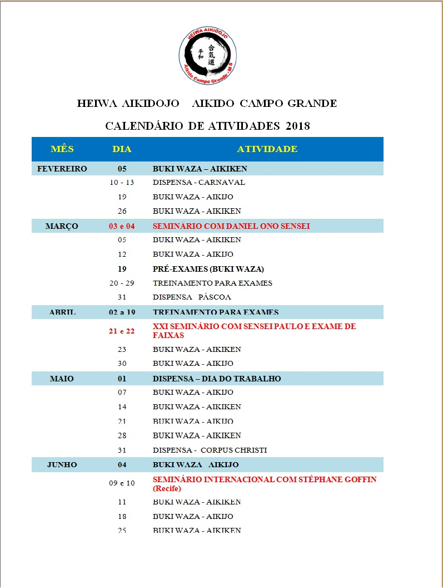

História do Aikido
Instrutores
O instrutor responsável pelos Heiwa Dojo é Sensei Arnaldo Mendonça (Sandan - Aikikai) e a supervisão técnica de Sensei Paulo Candéa (4º Dan - Aikikai) da Associação Reishin Kawai - Aikido Recife, PE. Nosso Dojo está vinculado à União Sulamericana da Arte AIKIDO, fundada pelo Shihan Reishin Kawai, introdutor do Aikido no Brasil.
Nome: Arnaldo Mendonça Júnior
Idade: 45
Inicio dos Treinos: 2005
Graduação: Sandan
O sensei Arnaldo iniciou os treinos de Aikido em setembro/2005,
sob tutela de Sensei Paulo Candéa (atualmente 4 Dan Aikikai) em
Recife/PE.
Formou-se 3 Dan em dezembro/2016. Iniciou o grupo do
Heiwa Aikidojô em 2011 quando veio trabalhar na capital sul
matogrossense. Formado em Ciências Contábeis, é Policial Federal
e lotado na Superintendência Regional de Polícia Federal em
Campo Grande/MS.
É o instrutor responsável (Fukushidoin) do Heiwa Aikidojô.
Também é instrutor de Defesa Pessoal Policial (DPP) e realiza treinos
mensais com os alunos que são também policiais e profissionais da
segurança pública convidados.
Nome: Marcos Roberto Severo Rosa
Idade: xxxxx
Inicio dos Treinos: 2009
Graduação: Shodan
Pastor, Bacharel em Teologia, com especialização em Exegese
(Grego Koinê), pelo Seminário Teológico Batista do Oeste do
Brasil.Técnico Judiciário do TRT 24ª Região. Shodan em Aikido
em nove anos de treino. Sandan de Karatê Shotokan pela academia
União dos Sargentos, com o Shihan 6º Dan, Antonio de Moura
(Toninho) com quarenta anos de treino. Árbitro da federação de
Karatê MS.Instrutor de Tonfa, BET (Bastão Expansivo Tático),
Algemação e abordagem tática pela empresa SOTAI de São Paulo.
Sensei: Willians Alves de Souza Idade: 39 Anos Inicio dos Treinos: 2009 Graduação: Shodan Bancário, Formado em administração de empresas Iniciando em 2009 no aikido e graduado shodan em 2016. Atualmente instrutor de treinos para iniciantes e graduados.
Notícias
Programação Anual

Downloads
| Nome | Descrição | link |
|---|---|---|
| Manual do aluno | O Manual do aluno contem uma compilação de informações sobre o aikido e suas tecnicas com varias obervações a cerca dessa maravilhosa arte Marcial! |
Download |
DOJOS
Em Campo Grande os interessados podem encontrar os Dojos Heiwa em dois locais : No Centro da Cidade na Rua 13 de maio, 4145 - Campo Grande - MS com a Travessa Cel Mario Pinto Peixoto, sob Responsabilidade do Sensei Arnaldo Mandonça 3º Dan.
Contamos com um amplo espaço equipado com:
- Vestiários Masculino e Feminino
- Recepção
- Bebedouros
- Sofás para quem tiver interesse em nos visitar e assistir aos treinos.
Ainda contamos com um tatame de 126 metros de área com espessura de 40mm para garantir a melhor experiência durante as praticas seja no taijutso técnicas desarmadas ou kenjutso utilizando armas tais como Bokken, Jo, Tantos, kodashis e Shinais. Possuímos convênios com o Sindicato dos Policiais Federais, Policiais Rodoviários Federais e Oficiais da PM. Caso queira assistir a um treino ou participar de uma aula sem compromisso, ligue e faça seu agendamento.

O início da Rua 13 de Maio, na altura do bairro São Francisco, exibe vários galpões imensos que há muitos anos eram considerados locais com papel importante na economia da cidade. Com o tempo, eles foram perdendo função e alguns acabaram demolidos e deram espaço a novas construções. Mas no início deste ano, um desses locais históricos teve valor reconhecido e foi revitalizado, ganhando nova cara e nova utilidade.
Fechado desde o início da década de 1980, o galpão foi cedido a um grupo de praticantes de Aikido, que se juntaram para colocar a mão na massa e deixar o prédio com cara de novo. Logo na fachada é possível ver o antes e depois significante.
A frente do galpão estava inteiramente pichada e com aspecto de abandono. Mas bastou uma lixadeira e algumas pessoas com braços fortes e disposição para que cada pedacinho do paredão de tijolos, agora à vista, fosse restaurado.
"Fizemos questão de manter o estilo rústico e preservar a originalidade da obra, por isso que apenas lixamos os tijolos, não passamos nenhum produto a mais", garante Celso Farias, um dos voluntários na obra e também praticante de Aikido.
As duas portas de ferro que compõem a entrada do galpão também estavam bastante deterioradas e ganharam apenas uma pintura na mesma cor da tinta que já estava quando receberam o espaço. Depois de tudo pronto, a fachada ganhou símbolos do Aikido feitos em madeira e que foram pendurados nos tijolos. Detalhes que fizeram toda a diferença na nova cara do galpão.
"A ideia de preservar a arquitetura histórica tambem foi uma das preocupações, mantendo o elo com o passado", ressalta Fábio Yamasato, herdeiro do galpão.
A restauração começou em janeiro deste ano e a parte de dentro também ganhou um banho de tinta nas paredes que estavam encardidas por causa da sujeira. O piso vermelho, que estava coberto pela poeira, também foi limpo e pintado de cinza. O resto, como estrutura, madeiras do teto e telhas foram mantidos os originais.
História - O galpão foi cedido pela família de Fábio Yamasato, que é praticante do Aikido.
"Meu avô chamava-se Yoshimatsu Yamasato. Ele veio do Japão muito jovem e começou a vida trabalhando na lavoura. Com o desenvolvimento da economia e dos negócios, em meados dos anos 1960, ele e seus três irmãos montaram um armazém que beneficiava arroz. Descascavam e ensacavam o grão para venda por atacado", conta Fábio.
Por volta dos anos 1980, também pelas mudanças econômicas, os negócios não iam bem e a família decidiu encerrar a empresa. Desde então, o antigo armazém, que fez história em Campo grande como tantos outros localizados na rua 13 de Maio, permaneceu fechado.
O avô de Fábio faleceu em 2014 e a família dele herdou o salão.
"Em dezembro de 2016, conversando com os amigos que praticam Aikido e oferecemos o salão para instalação da nossa associação", explica Fábio.
O Aikido é uma arte marcial japonesa que mistura defesa pessoal com filosofia oriental da paz e equilíbrio. E a parceria da família de Fábio com a associação dos praticante da arte marcial é uma forma de homenagear o patriarca.
"Na cultura japonesa, a lembrança, respeito e culto aos antepassados é muito presente. Então, acreditamos que a nova utilização do espaço é motivo de orgulho para meu avô, ele estaria muito feliz com este projeto se estivesse vivo".
fonte: https://www.campograndenews.com.br/lado-b/arquitetura-23-08-2011-08/galpao-que-ha-decadas-servia-para-ensacar-arroz-e-restaurado-na-base-do-mutirao

Na UFMS na Cidade Universitária Universitário - Pioneiros, Campo Grande - MS ao lado da quadra de futebol. Sob Responsabilidade do Sensei Marcelo Bordigon 2º Dan.
A estrutura conta com :
- Amplo espaço para as práticas do Aikido com um Tatame em EVA
- Área para assitir os treinos
- Bebedouro
- Vestiários Masculino e Feminino

Galeria
Convênios
- Sindicato dos Policiais Federais
- Policiais Rodoviários Federais
- Oficiais da PM
Filiação
O Aikido Liga Brasil nasceu da necessidade de melhor organizar em território nacional as atividades das escolas de aikido do “Aikido Ligne Tissier”. E assim possibilitar a seus instrutores e alunos uma constante atualização técnica.
A orientação técnica do Aikido Liga Brasil é feito pelo professor francês Christian Tissier 8º dan, Shihan pelo Hombu Dojo no Japão.
Temos como objetivo desenvolver um aikido de alto nível e, para atingir esse objetivo, organizamos e participamos de seminários internacionais com jovens mestres tais como Bruno Gonzalez, Fabrice Croizé, Nádia Korich, Pascal Guillemin e Stephane Goffin 2016. Esses seminários permitem que os alunos e os instrutores tenham a oportunidade de contato com um aikido de alto nível e uma constante atualização técnica.
Aikido e Atividades Policiais
- Contenção de suspeito
- Uso de algemas
- Condução de detido
- Defesa contra agressões
- Defesa contra tentativa de desarmamento
- Defesa contra ataque com arma branca
- Defesa contra ameaça com arma de fogo